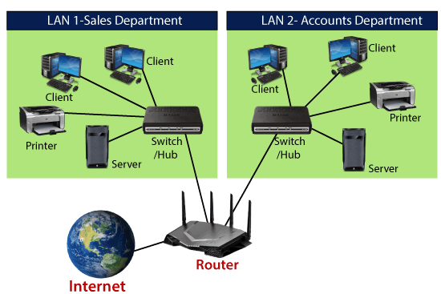

What is internet
Introduction to Internet
The Internet is a worldwide organization of billions of PCs and other electronic gadgets. With the Internet, it's possible
to get to practically any data, speak with any other person on the planet, and do significantly more.
You can do all of this by associating a PC to the Internet, which is likewise called going on the web. At point when
somebody says a PC is on the web, it's simply one more approach to saying it's associated with the Internet.

How does internet work
watch this video to understand how does the internet works
Be it for a Google search for your favorite movie, or an email to a friend, what's essentially happening when you use the internet is that you're sending a message from your device to another device. Thus, when you use the internet, what you're doing is sending and receiving messages (requests) to and from other computers and devices on the network.
Data Transmission on the Internet

The computers and devices that we use are called clients and the computers that websites such as Google or Facebook use
are called servers. The websites we access are all files on the hard disks of the respective servers. Our devices do not
directly access these files. When we access google.com for example, our client device forwards its requests to Google
servers via our internet service providers (ISPs). The results also come to us via our ISPs. Which is why we cannot access
the internet if our connection to our ISPs gets terminated.
Also, these messages and requests aren't sent or received as a whole. Any time you use the internet, your message is
broken down into units called packets that travel through the network to its destination. Upon arrival at the
destination, the packets are put together in the original order. You can think of a packet as a chunk of your message
query. Or like a part of a jigsaw puzzle that needs to be solved at the destination. If for some reason the packets aren't
put together in the right order at the right time, the results are in the form of distorted content. Like when a video
lags, or a web page doesn't load properly.But there are millions of people and devices accessing the internet at any given
time. Which means countless packets of data. So how do these packets of data find their way to their intended destination?
Every device connected to the internet has its own unique I.P address which acts as the postal address does in the
physical world. And to make the data flow smoother and avoid data traffic jams, there are routers. Routers sort the
packets based on their destination and ensure that they end up on the right device and not on other devices on the
network.
Internet protocol
The IP protocol (an acronym for Internet Protocol) is one of the key protocols of the Internet along with the transport
protocols TCP and UDP. IP works on several types of networks such as Ethernet for local networks, but can also be
encapsulated on other protocols such as ATM, even if more and more IP is establishing itself as the universal protocol.
It provides data routing information on the network, and describes a method of fragmenting the information to be
transported, in the form of datagrams. For example, a message of a length of one million bytes transported over an IP
network will be cut into a multitude of datagrams (or IP packets) - these packets include multiple header fields, the
source IP address and the recipient's IP address, followed by the data itself - by its sender, then sent to its recipient
who will be responsible for reassembling the packets to reconstruct the source message.
IP Adresses
The Internet Protocol Address, abbreviated as "IP address" or simply "IP", is based on the Internet Protocol which also forms the basis of the Internet network. This is the clearly identifiable address of a device (e.g. computer, web server, printer) within an internal or external network. An IP address can also refer to a set of devices, especially in the case of broadcast or multicast broadcasting. Similarly, several addresses can be assigned to the same computer. In any case, one thing is immutable: each IP address can only be assigned once at the same time within a network.
How is an IP address structured?
There are two versions of IP addresses with very different structures. They have in common the fact of being composed of a network part (for routing in the case of IP routing) and a host part (for allocation to a particular computer).
DNS
The DNS (Domain Name System) server is a service whose main function is to translate a domain name into an IP address. To simplify, the DNS server acts as a directory that a computer consults when accessing another computer via a network. In other words, the DNS server is this service which makes it possible to associate an IP address with a website (or a connected computer or a server), like a telephone directory makes it possible to associate a telephone number with a subscriber name.
Paquets (TCP and UDP)
- TCP
- UDP
TCP stands for Transmission Control Protocol a communications standard that enables application programs and computing devices to exchange messages over a network. It is designed to send packets across the internet and ensure the successful delivery of data and messages over networks. TCP is one of the basic standards that define the rules of the internet and is included within the standards defined by the Internet Engineering Task Force (IETF). It is one of the most commonly used protocols within digital network communications and ensures end-to-end data delivery.
The User Datagram Protocol, or UDP, is a communication protocol used across the Internet for especially time-sensitive transmissions such as video playback or DNS lookups. It speeds up communications by not formally establishing a connection before data is transferred. This allows data to be transferred very quickly, but it can also cause packets to become lost in transit — and create opportunities for exploitation in the form of DDoS attacks.
HTTP
Hypertext Transfer Protocol (HTTP) is an application-layer protocol for transmitting hypermedia documents, such as HTML. It was designed for communication between web browsers and web servers, but it can also be used for other purposes. HTTP follows a classical client-server model, with a client opening a connection to make a request, then waiting until it receives a response. HTTP is a stateless protocol, meaning that the server does not keep any data (state) between two requests.
HTML
HTML (HyperText Markup Language) is the most basic building block of the Web. It defines the meaning and structure of web content. Other technologies besides HTML are generally used to describe a web page's appearance/presentation (CSS) or functionality/behavior (JavaScript).
Routers
A router is a device that connects two or more packet-switched networks or subnetworks. It serves two primary functions: managing traffic between these networks by forwarding data packets to their intended IP addresses, and allowing multiple devices to use the same Internet connection. There are several types of routers, but most routers pass data between LANs (local area networks) and WANs (wide area networks). A LAN is a group of connected devices restricted to a specific geographic area. A LAN usually requires a single router.
